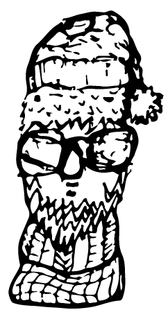

Niemand hat wohl soviel Ahnung vom wirklichen Leben, wie der Taxifahrer mit Schirmmütze und Lederjacke. Fabulierende Weisheit aus einem Gesicht mit Schnurres und nikotingeschwängertem Atem. Da geht es vom Großen ins Kleine und wieder zurück. Gedanken direkt aus den fahrenden Elfenbeintempeln, die dich sicher durch die Nacht bringen.

Name: Werner Makschin
Alter: Ende 50
Herkunft: Berlin
Typ: "Schrebergärtner" - Schnurrbart und Lederjacke
Themen: Revolution, gesellschaftliche Gerechtigkeit, enttäuschte Ostdeutsche
1. Etappe:"Es müsste mal wieder einen richtigen Knall geben"
Einstieg: Ich frage ihn, ob wir überhaupt durchs Regierungsviertel fahren können, wo doch der chinesische Staatschef im Kanzleramt zu Besuch ist und in solchen Fällen meist alles abgesperrt wird.
Nee, da waren gestern auch schon große Demonstrationen. So ist das eben, Staatschefs müssen vor denen geschützt werden, von denen se gewählt worden sind. Auf Kosten des Volkes. Das sollte dem ein oder anderen denn vielleicht doch mal zu denken geben. Hier muss dringend wieder was passieren. Hier läuft doch was nicht richtig, oder? Ick sage, es müsste wieder einen richtigen Knall geben.
Und dann?
Na, sonst bewegt sich doch nischt. Ick meine, gucken Sie sich das doch mal an, die Leute kümmern sich um nischt, die gehen alle nur einkaufen.
Aber damit helfen sie doch immerhin der Wirtschaft zu überleben?
Ach, so weit denken die doch überhaupt nicht. Jetzt wieder mit dem Zumwinkel, kann mir das mal einer erklären? Warum sie den mit der S-Klasse abholen? Überhaupt warum die Steuerfahndung S-Klasse fährt? Mich würden sie mit einem blauen Bulli abtransportieren. Warum ist der so wichtig? Warum wird der so schonend behandelt? Ich sag es Ihnen: Weil er einiges weiß über die anderen Wichtigen, die auch alle nicht wollen, dass über sie wat rauskommt.
Und wann wird er kommen, der große Knall?
Na, vielleicht sind die Deutschen zu obrigkeitshörig. Das wird schon von den Eltern an die Kinder weitergegeben und immer so weiter. Irgendwo isset ja ooch richtich, dass et son jeordnetet Zusammenleben geben muss. Sonst würde ja ooch nischt loofen. Aber die Leute wollen eben ooch keene richtige Freiheit. ln der DDR wardet ja ooch lange so. Die hatten ihren kleinen Garten, ihre Natur, ihren Kühlschrank und Fernseher und waren zufrieden. Und jetze hamse dieset Jefühl, det der böse Kapitalismus ihnen allet wegnimmt und versaut.
War doch auch naiv zu glauben, dass sie im perfekten System landen.
Det uns da nich die jebratenen Tauben umme Ohren fliegen würden, war mir schon lange klar. Aber vielen andern nich. Ich bin ja selbst auße DDR jeflohen. Als ich wegen versuchter Republikflucht vor Gericht stand, waren da Mitangeklagte, die dachten det wirklich, im Westen wär allet golden. Die gaben denn zu Protokoll, dass sie nur einmal ne Honda fahren wollten in ihrem Leben usw.
Wann sind Sie denn geflüchtet?
1974. Erst habick et anna Ostsee versucht, dann anna tschechischen Grenze. Hat beidet nich jeklappt. Dann hammse mich in Berlin wegen Republikfluchtplanung ranjekricht. War jut so. Haft war sowieso der sicherste Weg innen Westen. Da mussfeste den Tod nich inne Augen kucken. Man musste nur einen im Westen haben, der dann diesen Vogel informiert hat. Der und zwee andere Rechtsanwälte haben det ja alles unter sich ausjemacht damals. Denn konnste First Class ausreisen.